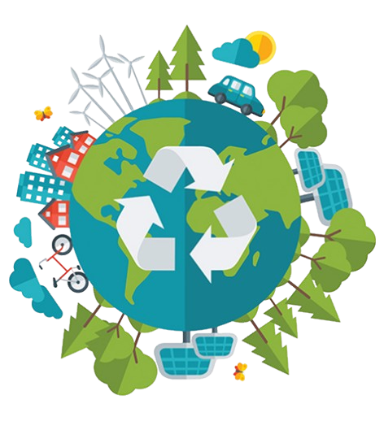

Ce este reciclarea?
Reciclarea este procesul de transformare în ceva nou a lucrurilor care nu ne mai sunt de folos. Spre exemplu, când termini de citit un ziar și îl arunci într-un tomberon pentru reciclat, el este dus într-o fabrică și transformat în hârtie nouă care poate fi folosită pentru ceva nou.
Importanța reciclării
- Protejarea mediului: Reciclarea ajută la reducerea cantității de deșeuri care ajung în gropile de gunoi și în natură. Aceasta reduce poluarea solului, apei și aerului.
- Conservarea resurselor naturale: Prin reciclare, resursele naturale sunt economisite, reducând nevoia de a extrage materiale din natură. De exemplu, reciclarea hârtiei reduce necesitatea tăierii copacilor.
- Reducerea consumului de energie: Producerea de produse reciclate consumă mai puțină energie comparativ cu fabricarea lor din materiale virgine.
- Reducerea emisiilor de carbon: Reciclarea poate contribui la scăderea emisiilor de CO2, având un impact pozitiv asupra schimbărilor climatice.

Tipuri de materiale care pot fi reciclate
- Hârtie: Include hârtie de birou, ziare, reviste, cutii de carton etc. Hârtia reciclată poate fi folosită pentru a produce hârtie nouă.
- Plastice: Diverse tipuri de plastic, cum ar fi PET (folosit la sticlele de apă) sau HDPE (folosit la recipiente de lapte), pot fi reciclate și reutilizate în producția de noi obiecte de plastic.
- Metale: Aluminiul (de exemplu, doze de băuturi) și oțelul pot fi reciclate la infinit fără a-și pierde din calitate.
- Sticlă: Sticla poate fi reciclată de mai multe ori fără a pierde din puritatea sa, fiind un material care nu se degradează.
- Electronice: Deșeurile electronice (telefoane, calculatoare, televizoare) pot fi reciclate pentru a extrage metale prețioase și pentru a reduce riscul de poluare.
- Baterii și acumulatori: Acestea conțin substanțe chimice care sunt periculoase pentru mediu, iar reciclarea lor este esențială pentru a preveni contaminarea.
Beneficiile reciclării
- Reducerea poluării: Reciclarea previne acumularea deșeurilor în gropile de gunoi, iar materialele reciclate sunt folosite pentru a fabrica produse noi, reducând poluarea.
- Economie de resurse: Permite economisirea materiilor prime, care sunt adesea mai costisitoare și mai dăunătoare mediului.
- Crearea de locuri de muncă: Industria reciclării creează locuri de muncă în domeniul colectării, sortării și procesării materialelor reciclabile.
Cum să îți implici comunitatea
- Organizarea de campanii de informare: Poți organiza workshop-uri sau sesiuni educative în școli sau în comunitate pentru a promova reciclarea.
- Parteneriate cu autoritățile locale: Colaborează cu autoritățile locale pentru a îmbunătăți infrastructura de reciclare.
- Evenimente de colectare a deșeurilor: Organizează evenimente de colectare a deșeurilor electrice, bateriilor sau altor materiale greu de reciclat.